Step 5 of 10
Provision the platform with Bicep
Run the Infrastructure workflow, approve it, and watch Bicep build the platform in one deployment: monitoring workspaces, a private registry, the AKS cluster, Prometheus and Container insights collection, alert rules and policy assignments.
Transcript (English)
Step five. The whole platform comes from one Bicep template, deployed by a workflow, behind an approval.
The Infrastructure workflow runs on changes under infra, on demand, or from the A P I.
Its deploy job targets the production environment, so it waits for approval before it can get an Azure token.
Main dot bicep wires five modules: monitoring, the registry, the cluster, observability, and guardrails.
The cluster resource sets Entra I D with Azure R B A C, local accounts off, Azure C N I Overlay with Cilium, availability zones, and the autoscaler.
After approval, the job signs in with OpenID Connect, and runs az deployment group create.
The first run failed. The approval is on record, and the failing operation is reported right on the run: a Kubernetes policy rejected a custom non-compliance message.
The fix is in policy dot bicep. Kubernetes-mode assignments get no custom message; Gatekeeper returns its own.
The second run succeeded. The summary shows the approval, and the deployment outputs.
In the resource group, the deployment history tells the same story: infra four stopped at one assignment, and infra five finished the job incrementally.
This is what exists now: the cluster, the registry, Log Analytics, the Azure Monitor workspace, data collection rules, and rule groups.
And the cluster, read back from Azure: Kubernetes 1.36, Azure R B A C, local accounts disabled, Cilium, and three zones.
Transcript (Bahasa Indonesia)
Langkah lima. Seluruh platform berasal dari satu templat Bicep, di-deploy oleh workflow, dengan gerbang persetujuan.
Workflow Infrastructure berjalan saat ada perubahan di infra, sesuai permintaan, atau dari A P I.
Job deploy-nya menargetkan environment production, jadi job ini menunggu persetujuan sebelum bisa mendapat token Azure.
Main dot bicep merangkai lima modul: monitoring, registry, cluster, observability, dan guardrail.
Resource cluster mengatur Entra I D dengan Azure R B A C, akun lokal nonaktif, Azure C N I Overlay dengan Cilium, availability zone, dan autoscaler.
Setelah disetujui, job masuk dengan OpenID Connect, lalu menjalankan az deployment group create.
Run pertama gagal. Persetujuannya tercatat, dan operasi yang gagal dilaporkan langsung di run tersebut: sebuah policy Kubernetes menolak pesan non-compliance kustom.
Perbaikannya di policy dot bicep. Assignment mode Kubernetes tak diberi pesan kustom. Gatekeeper memberi pesannya sendiri.
Run kedua berhasil. Ringkasannya menampilkan persetujuan dan output deployment.
Di resource group, riwayat deployment menunjukkan hal yang sama: infra empat berhenti di satu assignment, dan infra lima menyelesaikannya secara inkremental.
Inilah yang ada sekarang: cluster, registry, Log Analytics, Azure Monitor workspace, data collection rule, dan rule group.
Dan cluster-nya, dibaca kembali dari Azure: Kubernetes 1 titik 36, Azure R B A C, akun lokal dinonaktifkan, Cilium, dan tiga zona.
What you will do#
- Start the Infrastructure (Bicep) workflow from the Actions tab.
- Approve the deployment at the
productiongate. - Follow the deployment in the Azure portal and inspect what it created.
This step ran fully automated: the GitHub API and the workflows in this repository did the work. The screenshots are public GitHub and app pages captured by the Guide evidence workflow, and the data frames show real output that the pipeline read back from Azure (read-only). The numbered instructions describe the same actions in the portal and GitHub UI.
Run the Infrastructure workflow#
- Open the Actions tab, select Infrastructure (Bicep) in the left list.
- Select Run workflow, keep the branch
main, and select Run workflow again. - Open the new run. The Deploy to Azure job shows Waiting: it needs approval.
In the recorded run
Actions: Infrastructure (Bicep) runs on changes under infra/, on demand, or from the API.
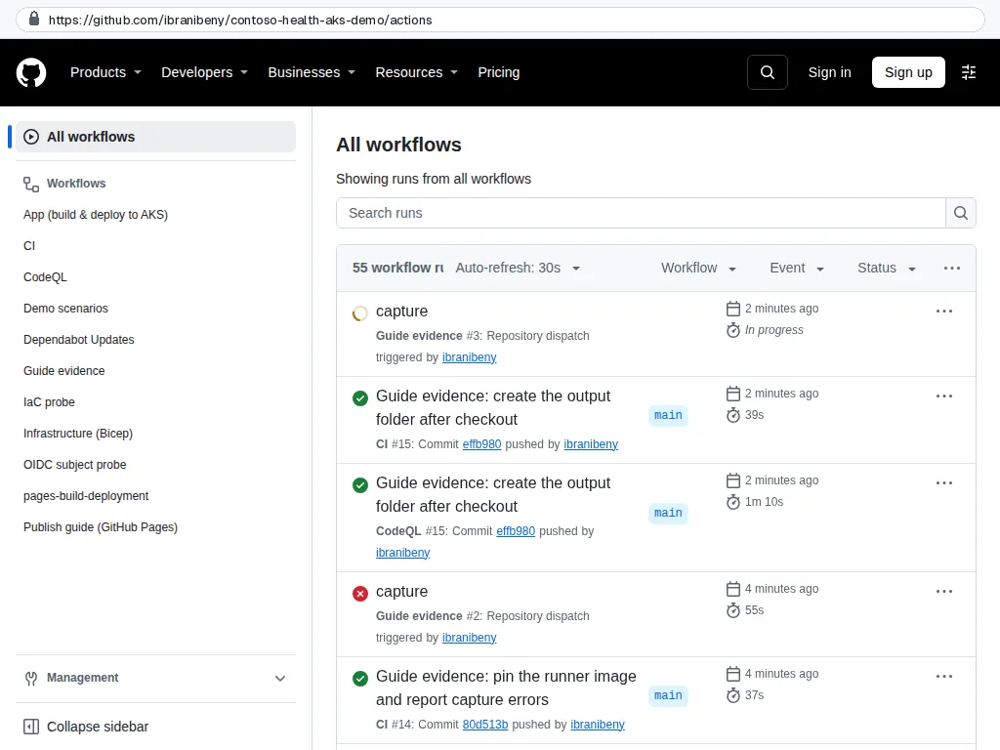
GitHub The deploy job targets the production environment, so it waits for approval before it can get an Azure token.
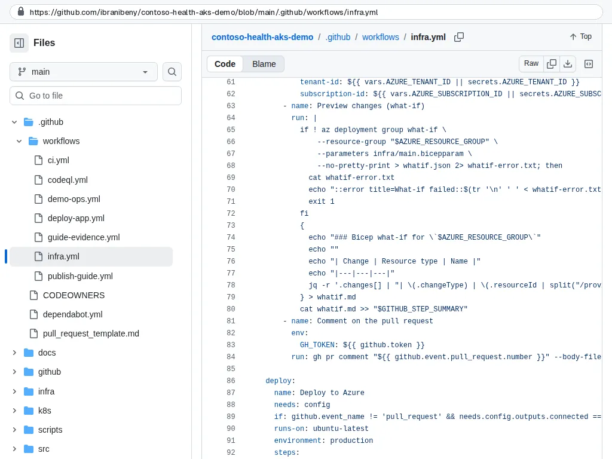
Repository code main.bicep wires five modules: monitoring, registry, cluster, observability and guardrails.
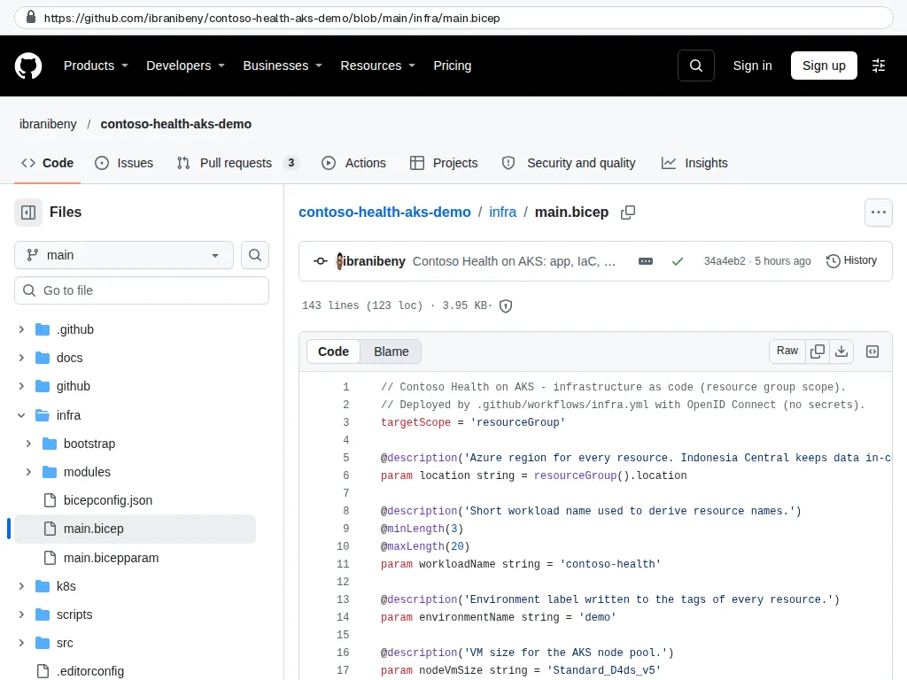
Repository code The cluster resource: Entra ID with Azure RBAC, local accounts off, Azure CNI Overlay with Cilium, zones and autoscaler.
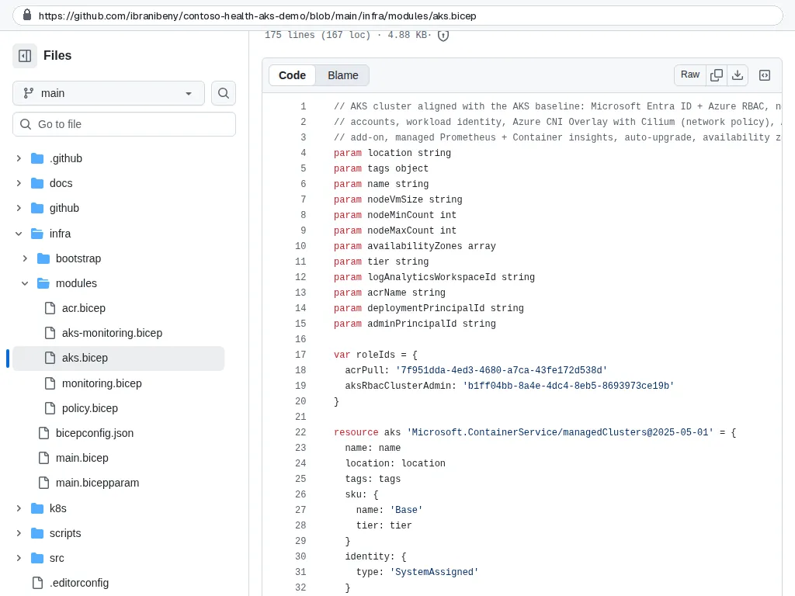
Repository code
Approve the deployment (and read the errors)#
- Select Review deployments, tick
production, optionally add a comment, and select Approve and deploy. - The job signs in with OIDC and runs
az deployment group createwithinfra/main.bicepandinfra/main.bicepparam.
In the recorded run
After approval the job signs in with OpenID Connect and runs az deployment group create.
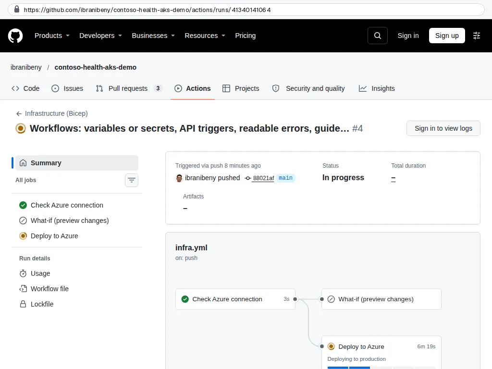
GitHub The first run failed. The approval is recorded, and the failing operation is an annotation: a Kubernetes policy rejected the custom non-compliance message.
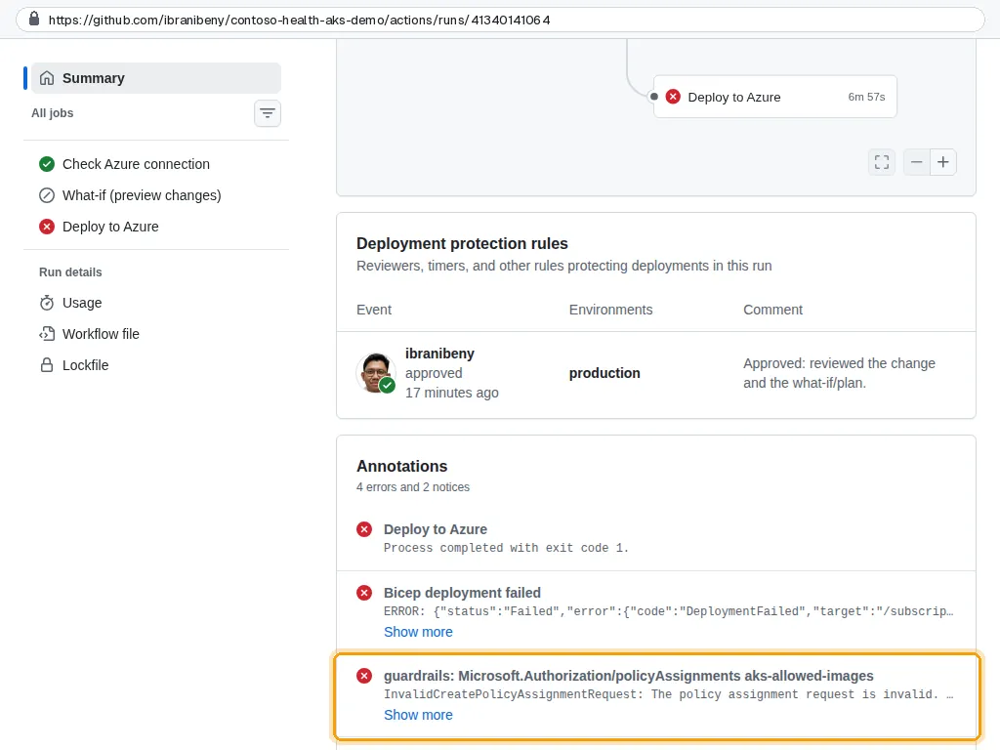
GitHub The fix in policy.bicep: Kubernetes-mode policy assignments get no custom message; Gatekeeper returns its own.
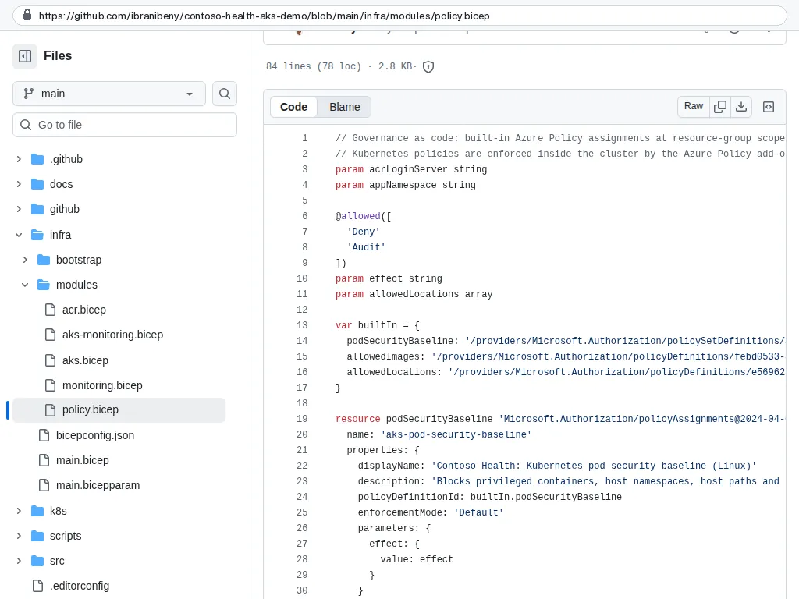
Repository code The second run succeeded. The run summary shows the approval and the deployment outputs.
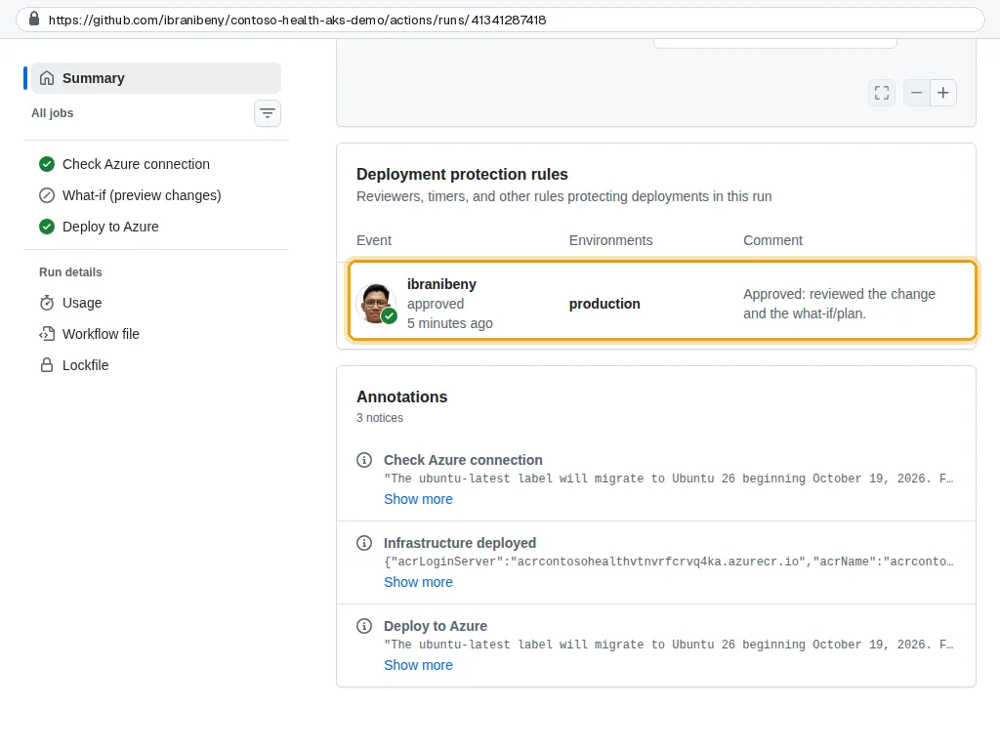
GitHub
Watch it in the Azure portal#
- In the portal open
rg-contoso-health-aks, then Settings, Deployments. A deployment namedinfra-<run number>is running, with nested deployments per module. - Open it to follow each module. The AKS cluster takes the longest.
- When it finishes, the workflow's Summary lists the outputs: cluster name, registry name and login server, workspace names.
In the recorded run
Deployment history in the resource group: infra-4 stopped at one assignment, infra-5 finished the platform incrementally.
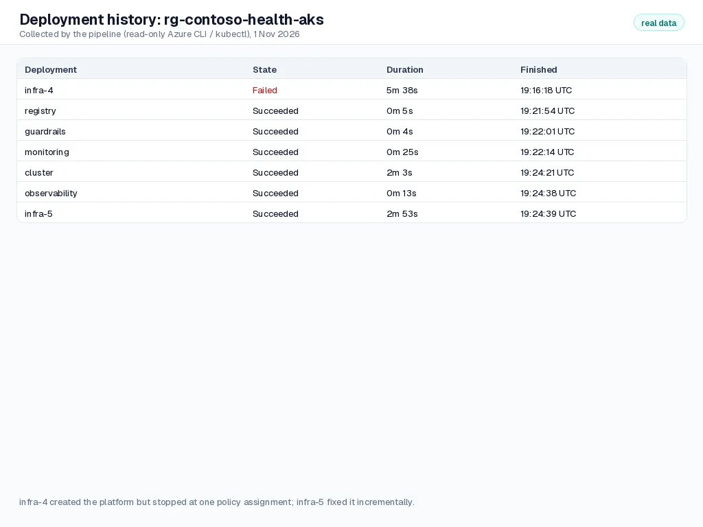
Pipeline output
What was created#
In the recorded run
What exists now: cluster, registry, Log Analytics, Azure Monitor workspace, data collection rules and rule groups.
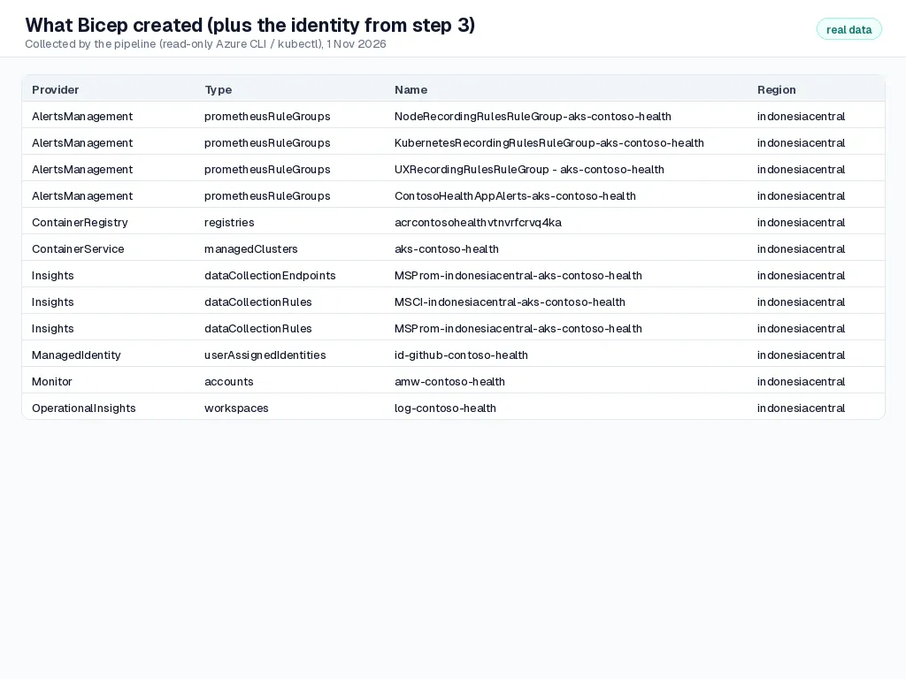
Pipeline output Cluster facts read back from Azure: Kubernetes 1.36.5, Azure RBAC, local accounts disabled, Cilium, three zones.
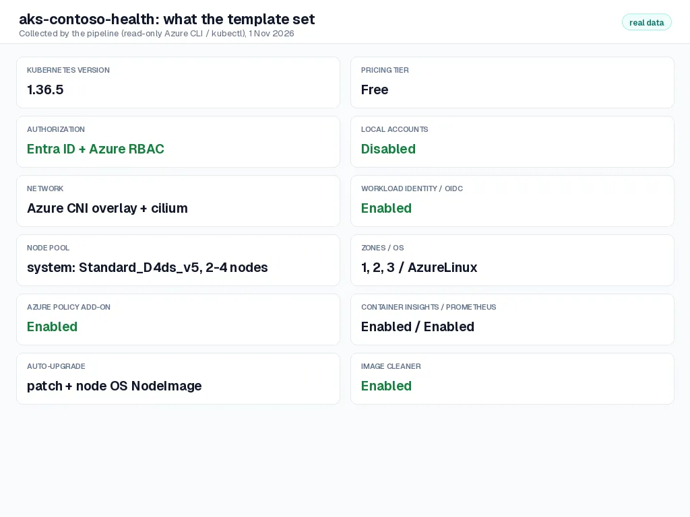
Pipeline output
| Name | Type | Purpose |
|---|---|---|
log-contoso-health | Log Analytics workspace | Container logs (ContainerLogV2), Kubernetes events and inventory, AKS control-plane audit logs |
amw-contoso-health | Azure Monitor workspace | Managed Prometheus metrics store |
acrcontosohealth<suffix> | Container registry (Standard) | Private images; admin user and anonymous pull disabled |
aks-contoso-health | Kubernetes service | Entra ID + Azure RBAC, local accounts disabled, Azure CNI Overlay with Cilium, zones 1-3, autoscaler 2-4 nodes |
MSProm-indonesiacentral-aks-contoso-health | Data collection endpoint and rule | Sends Prometheus metrics from the cluster to the Azure Monitor workspace |
MSCI-indonesiacentral-aks-contoso-health | Data collection rule | Container insights collection to Log Analytics |
NodeRecordingRulesRuleGroup-…, KubernetesRecordingRulesRuleGroup-…, UXRecordingRulesRuleGroup - … | Prometheus rule groups | Recording rules that feed the built-in dashboards |
ContosoHealthAppAlerts-aks-contoso-health | Prometheus rule group | Three alert rules: 5xx rate, pod restarts, unavailable replicas |
| Policy assignments (3) | Azure Policy | Pod security baseline, allowed images, allowed locations (visible under Policy, not in the resource list) |
Check your work#
- The workflow run is green and its summary shows the outputs.
- The resource group lists the cluster, registry, workspaces, data collection rules and rule groups.
- The cluster's Overview shows Kubernetes version, Azure RBAC authorization, network plugin Azure CNI Overlay with Cilium.
How it works#
One template, five modules. main.bicep wires together monitoring, acr, aks, aks-monitoring and policy. Every resource gets the same tags, names derive from one workload name, and the registry name gets a deterministic suffix (uniqueString(resourceGroup().id)) so it is globally unique but stable across runs.
Incremental and repeatable. Re-running the workflow with no changes is safe: Azure Resource Manager compares the template to what exists and changes nothing. That is why infrastructure changes go through pull requests with a what-if preview (step 7).
Parameters without secrets. main.bicepparam holds the values safe to commit; identity values arrive as environment variables from repository variables through readEnvironmentVariable().
Troubleshooting#
| Symptom | Fix |
|---|---|
InvalidCreatePolicyAssignmentRequest: non-compliance messages not supported for mode Microsoft.Kubernetes.Data | Seen in the recorded run. Remove nonComplianceMessages from Kubernetes-mode policy assignments (fixed in infra/modules/policy.bicep). |
RequestDisallowedByPolicy | An existing policy in your subscription or management group denies something in the template (for example a required tag or SKU). Read the policy name in the error and exempt or adjust. |
Quota error for standardDDSv5Family | Request more vCPU quota in Indonesia Central or set AKS_NODE_VM_SIZE to a size you have quota for. |
AuthorizationFailed on role assignments | Check the role and condition from step 3 and that AZURE_PRINCIPAL_ID is the identity's Object (principal) ID, not its Client ID. |